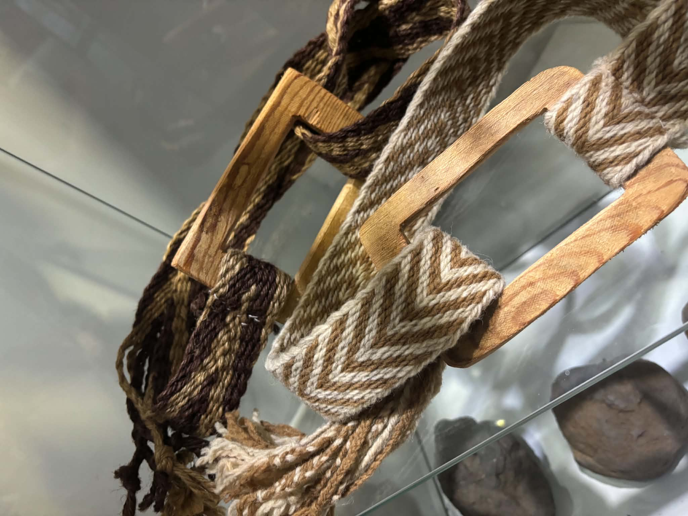
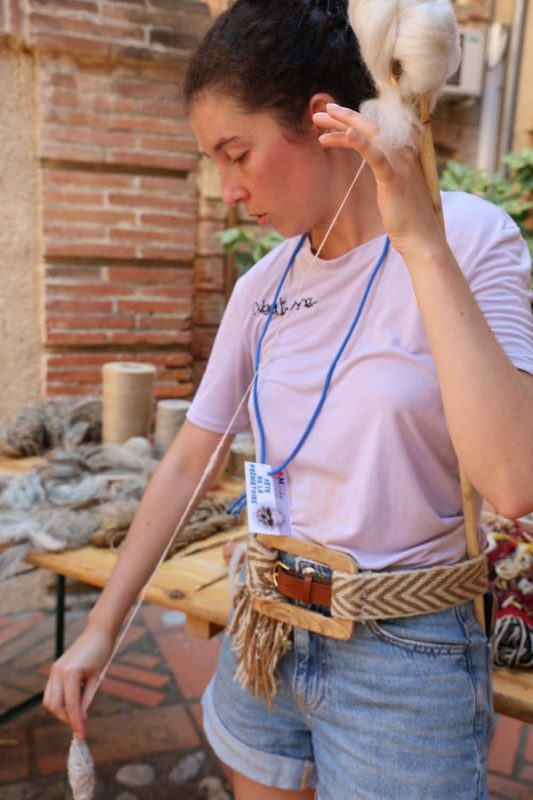
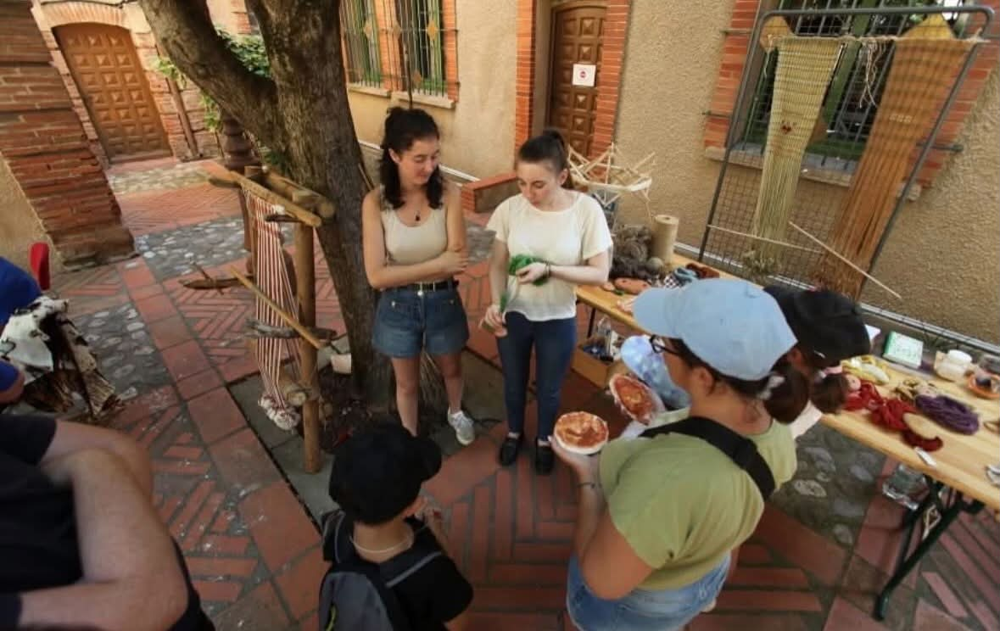
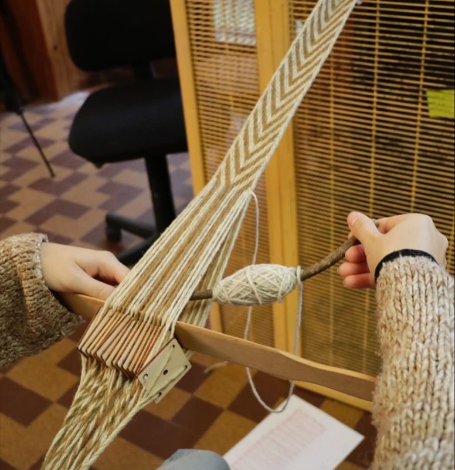
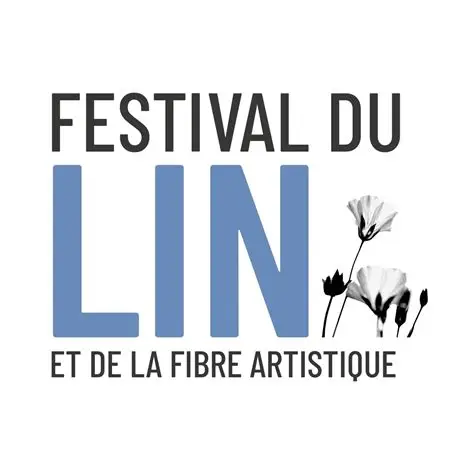

Filage au fuseau
De la fibre au fil, découvrez la préparation des matières et les gestes du fuseau ou de la quenouille.
Découvrir l’atelier ↗Le fil des gestes anciens
Du Néolithique au Moyen Âge, redécouvrez les gestes du filage, du tissage et de la teinture.

Fondée en mai 2024 à Montpellier, Néotisse rend accessibles les techniques textiles anciennes à travers une approche scientifique et sensorielle.

Démonstrations, médiation culturelle et archéologie expérimentale font dialoguer les matières, les outils et l’histoire.
Explorer nos actions
Du filage à la teinture naturelle, Néotisse propose des démonstrations et des initiations adaptées à votre public.
Voir les ateliersDe la fibre au fil, découvrez la préparation des matières et les gestes du fuseau ou de la quenouille.
Découvrir l’atelier ↗Observez comment la chaîne est tendue et comment le passage de la trame forme l’étoffe.
Découvrir l’atelier ↗Manipulez les tablettes et découvrez comment leurs rotations construisent les motifs d’une bande tissée.
Découvrir l’atelier ↗
Découvrez les matières tinctoriales, la préparation des bains et les étapes de coloration des fibres.
Découvrir l’atelier ↗Le textile permet d’interroger les sociétés du passé. En expérimentant les techniques anciennes, on apprend à lire les traces laissées par les outils et les matières.
En savoir plusRetrouvez les ateliers et rencontres de Néotisse. Les exemples sont signalés.
Découvrez comment les fibres deviennent un fil et essayez les gestes du filage au fuseau.
Exemple fictif · Montpellier
Voir les détails ↗Une découverte des fils, des motifs et des gestes du tissage aux tablettes.
Exemple fictif · Montpellier
Voir les détails ↗Explorez le rôle des plantes, des fibres et des bains de teinture.
Exemple fictif · Montpellier
Voir les détails ↗ CERAC
CERAC
Festival du lin Musée archéologique de Lattes
Musée archéologique de Lattes Musée de Gergovie
Musée de Gergovie Musée de Tautavel
Musée de Tautavel Université Paul Valéry Montpellier 3
Université Paul Valéry Montpellier 3Musée, école, collectivité ou structure culturelle : imaginons ensemble une intervention adaptée à votre public.
« J’ai enfin compris comment une fibre devient un fil. Essayer le fuseau m’a donné envie de continuer chez moi. »
« Voir le motif apparaître après chaque rotation des tablettes, c’était mon moment préféré. »
« Les échantillons m’ont surprise. La même plante peut donner des nuances très différentes selon la fibre. »